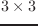

行列は、要素がすべて実数の2次元の配列である。
ほとんどの関数において行列はどんなサイズでもよいが、
v*, v.*, euler-angle, rpy-angle関数では3次元の行列のみ
扱うことができる。
transform, m*とtransposeは、行列を正方行列に限定せず、
一般のn*m行列に対して処理を行う。
resultパラメータを受けた関数は、計算結果をそこに置く。
そのため、ヒープは使用しない。
すべての行列関数は、正規座標系における変換を考慮しており、
同次座標系は考慮していない。
rpy-angle関数は、回転行列をワールド座標系におけるz,y,x軸回りの
3つの回転角に分解する。
euler-angle関数はrpy-angleと同様に分解するが、
回転軸がローカル座標系のz,y,z軸となっている。
角度が反対方向にも得られるため、これらの関数は2つの解を返す。
; Mat is a 3X3 rotation matrix.
(setq rots (rpy-angle mat))
(setq r (unit-matrix 3))
(rotate-matrix r (car rots) :x t r)
(rotate-matrix r (cadr rots) :y t r)
(rotate-matrix r (caddr rots) :z t r)
;--> resulted r is equivalent to mat
3次元空間の位置と方向の組みを保つために、13.4節に記載されている
coordinatesとcascaded-coordsクラスを使用すること。
matrix &rest elements [関数]
-
-
elementsから行列を新しく作る。
Row x Col = (elementsの数) x (最初のelementの長さ)
elementsは、どの型の列((list 1 2 3)や(vector 1 2 3)や
(float-vector 1 2 3))でもよい。
それぞれの列は行列の行ベクトルとしてならべられる。
make-matrix rowsize columnsize &optional init [関数]
-
-
の大きさの行列を作る。
matrixp obj [関数]
-
-
もし、objが行列のとき、すなわち、objが2次元の配列で
その要素が実数であるとき、Tを返す。
matrix-row mat row-index [関数]
-
-
行列matからrow-indexで示される行ベクトルを抽出する。
matrix-rowは、setfを使用することにより
行列の特定の行にベクトルを設定することにも使用される。
matrix-column mat column-index [関数]
-
-
行列matからcoloumn-indexで示される列ベクトルを抽出する。
matrix-columnは、setfを使用することにより
行列の特定の列にベクトルを設定することにも使用される。
m* matrix1 matrix2 &optional result [関数]
-
-
matrix1とmatrix2の積を返す。
transpose matrix &optional result [関数]
-
-
matrixの転置行列を返す。すなわち、matrixの列と行を入れ替える。
unit-matrix dim [関数]
-
-
dim dimの単位行列を作る。
replace-matrix dest src [関数]
-
-
行列destのすべての要素を同一な行列srcで置き換える。
scale-matrix scalar mat [関数]
-
-
matのすべての要素にscalerを掛ける。
copy-matrix matrix [関数]
-
-
matrixのコピーを作る。
transform matrix fltvector &optional result [関数]
-
-
行列matrixをベクトルfltvectorの左から掛ける。
transform fltvector matrix &optional result [関数]
-
-
行列matrixをベクトルfltvectorの右から掛ける。
rotate-matrix matrix theta axis &optional world-p result [関数]
-
-
rotate-matrixで行列matrixを回転させるとき、
回転軸（:x, :y, :zまたは0,1,2）はワールド座標系あるいは
ローカル座標系のどちらかを与えられる。
もし、world-pにNILが指定されているとき、
ローカル座標系の軸に沿った回転を意味し、回転行列を左から掛ける。
もし、world-pがnon-NILのとき、
ワールド座標系に対する回転行列を作り、回転行列を右から掛ける。
もし、axisにNILが与えられたとき、行列matrixは2次元と仮定され、
world-pの如何にかかわらず2次元空間の回転が与えられる。
rotation-matrix theta axis &optional result [関数]
-
-
axis軸回りの2次元あるいは3次元の回転行列を作る。
軸は:x,:y,:z,0,1,2,3次元ベクトルあるいはNILのどれかである。
2次元回転行列を作るとき、axisはNILでなければならない。
rotation-angle rotation-matrix [関数]
-
-
rotation-matrixから等価な回転軸と角度を抽出し、
実数とfloat-vectorのリストを返す。
rotation-matrixが単位行列のとき、NILが返される。
また、回転角が小さいとき、結果がエラーとなる。
rotation-matrixが2次元のとき、1つの角度値が返される。
rpy-matrix ang-z ang-y ang-x [関数]
-
-
ロール、ピッチ、ヨー角で定義される回転行列を作る。
最初に、単位行列をx軸回りにang-xラジアン回転させる。
次に、y軸回りにang-yラジアン、最後にｚ軸回りにang-z
ラジアン回転させる。
すべての回転軸はワールド座標系で与えられる。
rpy-angle matrix [関数]
-
-
matrixの2組のロール、ピッチ、ヨー角を抽出する。
Euler-matrix ang-z ang-y ang2-z [関数]
-
-
3つのオイラー角で定義される回転行列を作る。
最初に単位行列をz軸回りにang-z回転させ、次にy軸回りにang-y
回転させ、最後にz軸回りにang2-z回転させる。
すべての回転軸はローカル座標系で与えられる。
Euler-angle matrix [関数]
-
-
matrixから2組のオイラー角を抽出する。
2016-03-23